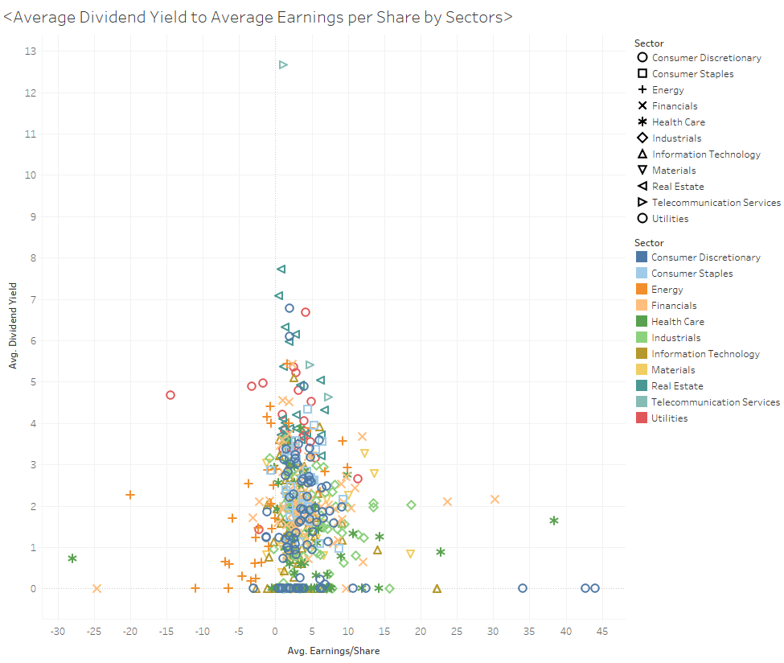
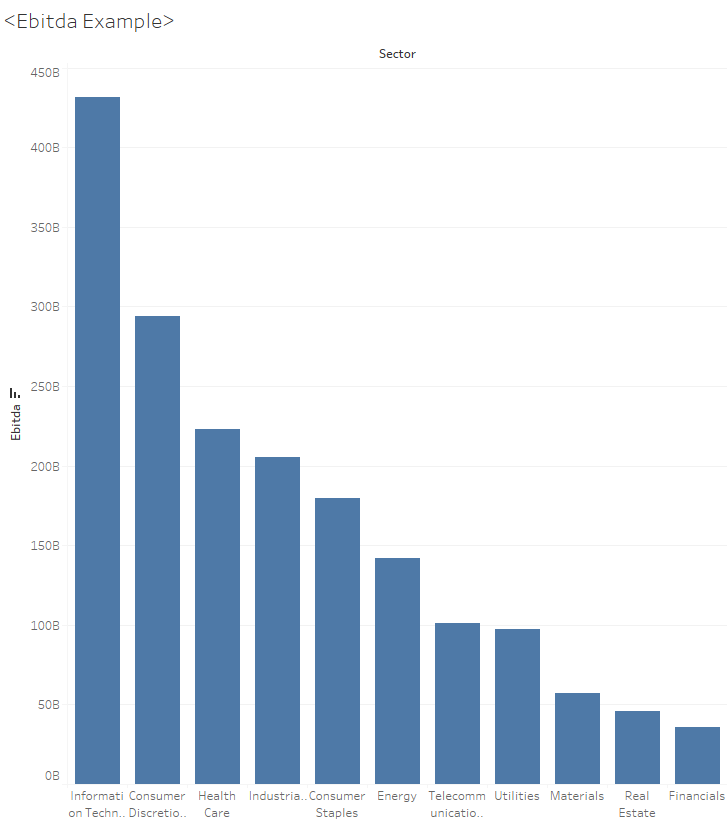
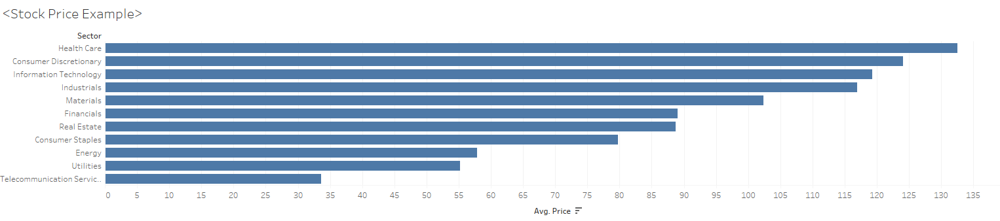

CSE412 Final Project - US Stock Market Analysis
How do we profit from investment into stock markets?
Before everything, add a quotes here from Warren Buffet about his “value investing”.
For this analysis we will focus on the COVID-period US stock market using indexes from SP500, which experienced moderate level of fluctuation due to various reasons. In the following context we will provide visualizations for aspects of the markets and give the audience a sense of how to choose a industry of interest and target several companies.
Part 1: Market Health Overview

Put the company map up here as the background, and introduction to the project and tells the basic knowledge audience required to understand the material.
Market Trendline 2020-2021

This is a trendline telling the Open-Close and High-Low value of entire stock market (SP500 focused).
Part 2: Insights into industries
In this part we will focus more on the difference of indexes between different industries, use the dataset “financials.csv” to create visualizations and add explanations.
We either explain the variables here or after every visualizations.
Dividend to EPS
Turn this static image into a VegaLite interactive visualization where audience could filter their own interest of industry.
Explain the variables and give insights of typical patterns of the visualization.
Ebitda analysis
Also turn this into VegaLite visulization where audience could pick their favorite company and see the contribution of the company to the whole industry.
Explain the variable Ebitda.
Price by sector
When investing, the price of the stock is also very important which decides how many shares you could buy and determine your return rates:
Also add one interactive bar that audience could search/pick their favorite companies stock price (with its 52 weeks high and low).
Part 3: Company’s seasonal reports
One of the documents to read prior to buying stocks will be the seasonal reports of the target company, where the balance sheet, income statement and their plans will be listed, we could then use them to estimate the profitablity of the company.
We will pick 5-10 technology companies (Apple, Amazon, Tesla, NVIDIA, Airbnb, Uber, ...) to make a dataset, and compare their indexes within 1 year period!
Data cleaning still in progress!!! Use “topcompaniesfinancialstatement.csv”.
Net Income to Total Assets
When looking at the value of a company, the profitablity and its assets are good measurements for its potential.
Visualization here!
Operating Expenses and Operating income
During each season we can use the comparison between operational expenses and income to interpret any specific events happened to the company, or entire industry and market.
Visualization here!
Revenue each season and same season different year comparison
Visualization here!
Part 4: Conclusion
Paragraph here to conclude our thoughts to the question, quotes are preferred to add at last.
Cite sources at the very last!
https://www.kaggle.com/paytonfisher/sp-500-companies-with-financial-information
And quotes sources!